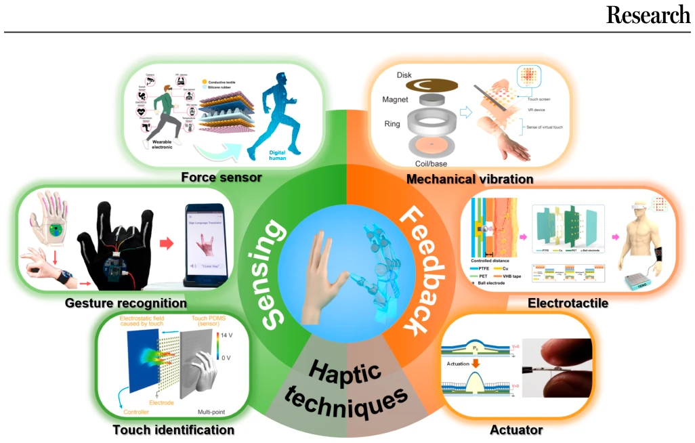
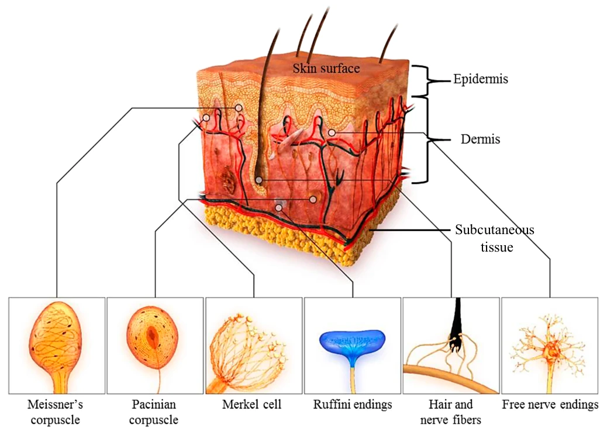
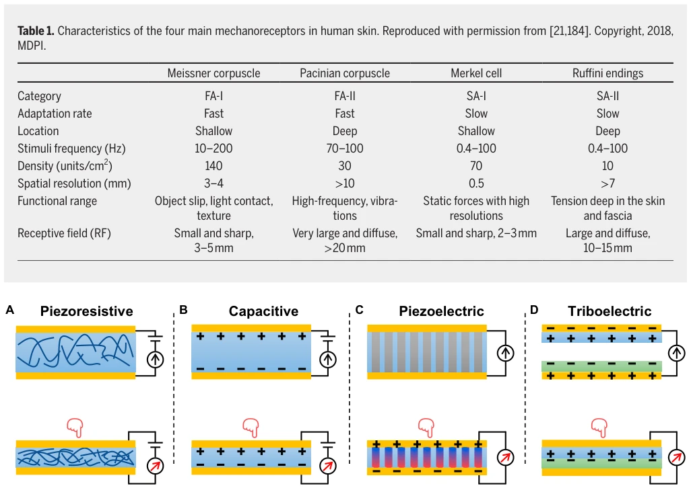
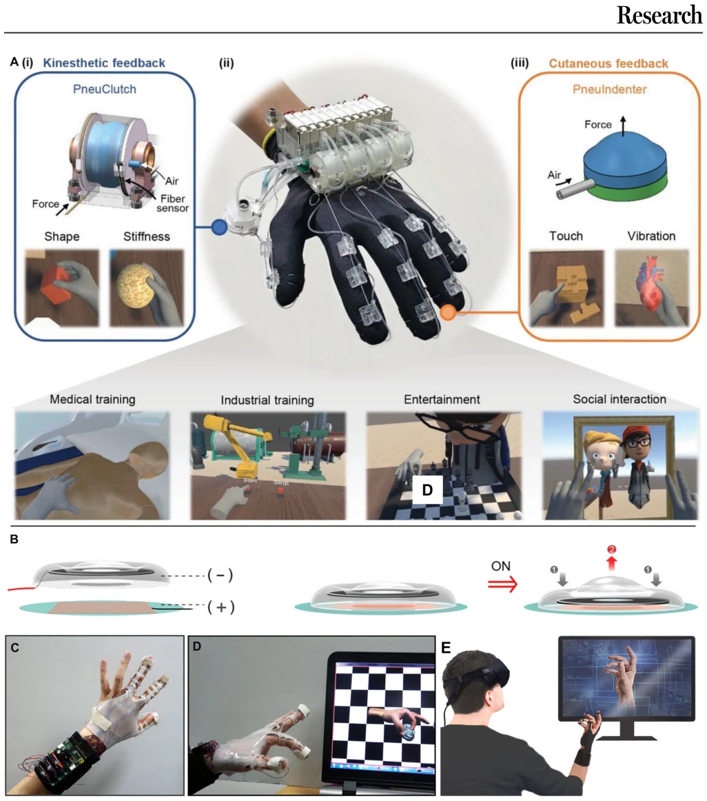
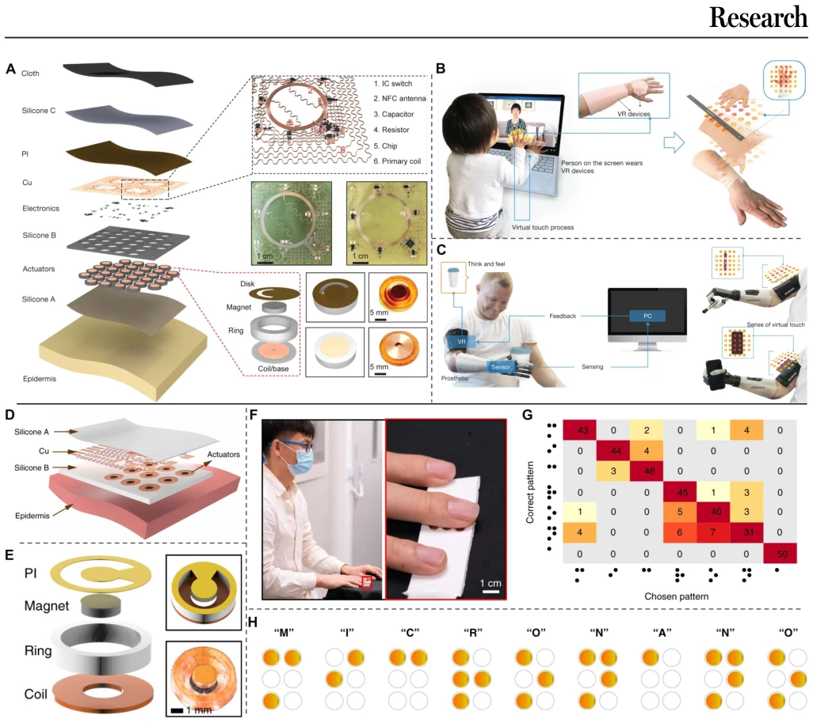
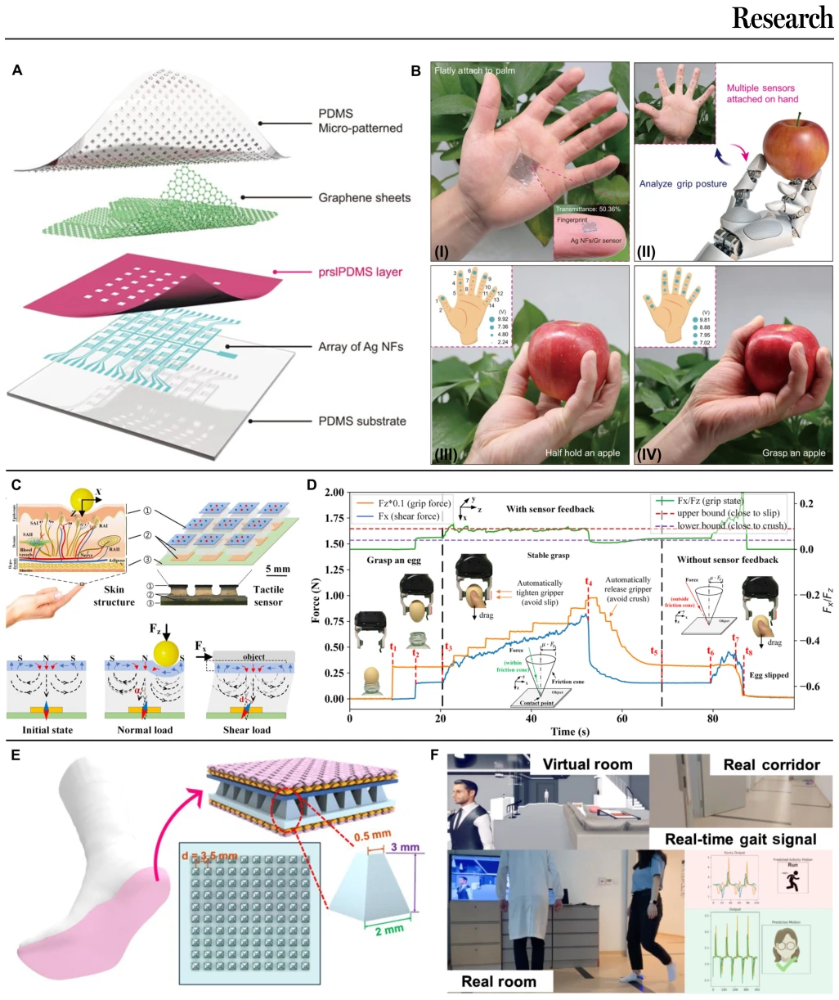
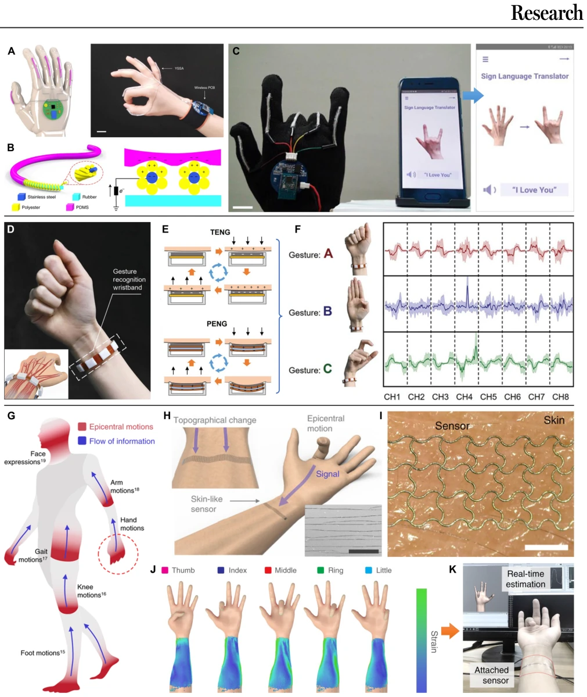
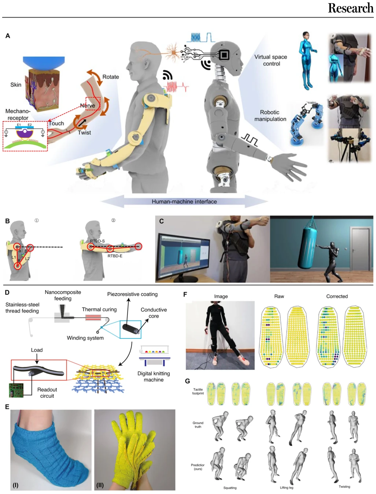
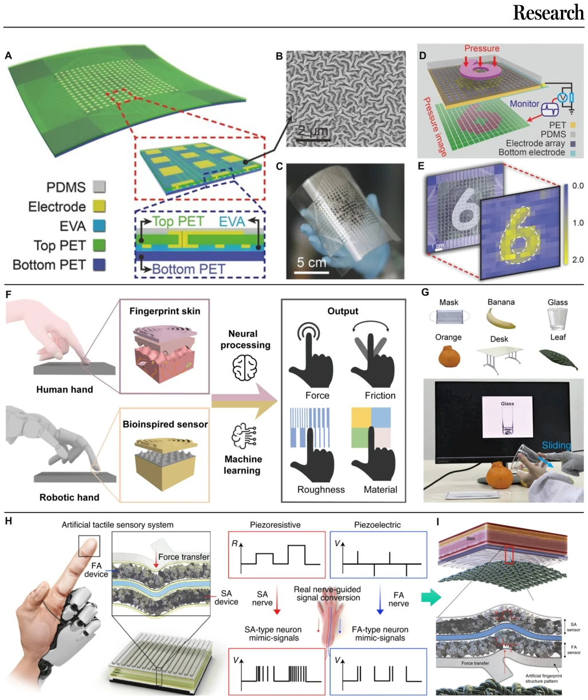
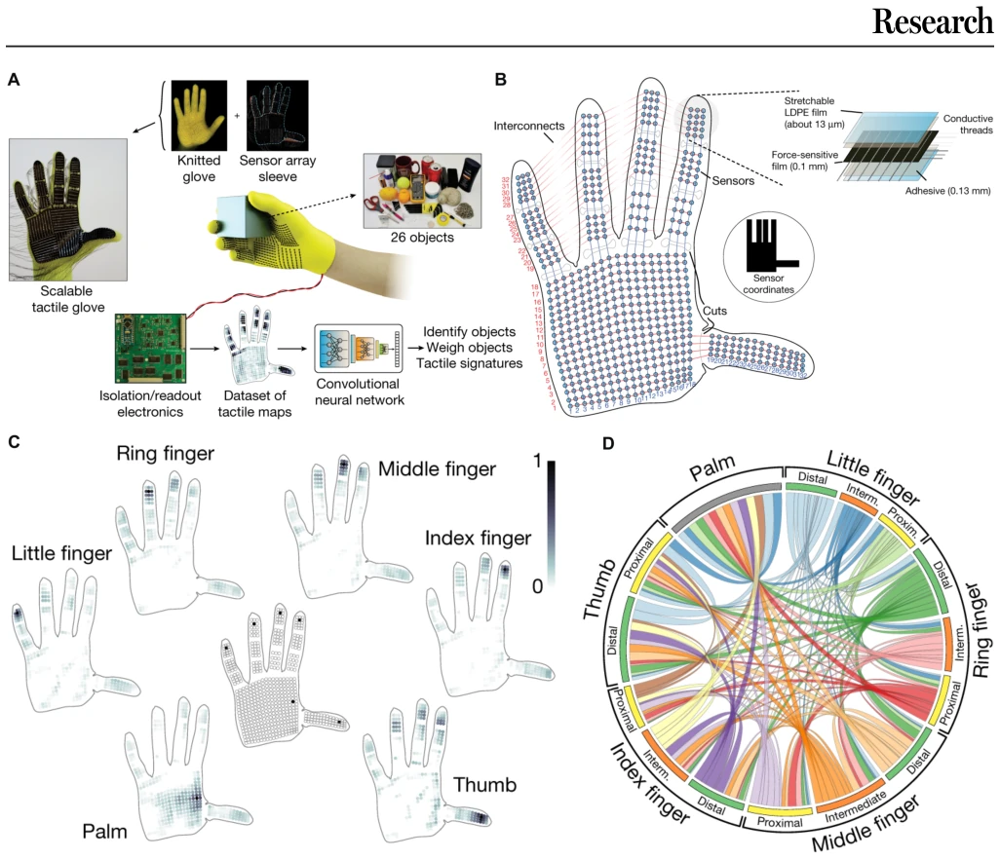

这篇综述像是一本“触觉技术百科全书”，把 VR 里的传感器和反馈器翻了个底朝天。优点是把压阻、电容、压电、摩擦电四大机制讲透了，还顺便科普了皮肤受体，适合入门。缺点嘛，毕竟是 Review，作者没造新轮子，全是别人家的成果。而且很多技术离商用还有距离，比如摩擦电的噪声问题、反馈设备的体积瓶颈，文中虽提了挑战，但解决方案还是“未来可期”式画饼。对于 Embodied AI 来说，这更多是感知层的基础设施盘点，而非策略创新。不过，将生物机制与硬件技术结合的思路值得肯定，为后续研究提供了清晰的路线图。
This review is like a "haptic technology encyclopedia", thoroughly turning the sensors and actuators in VR inside out. The advantage is that it thoroughly explains the four major mechanisms of piezoresistive, capacitive, piezoelectric, and triboelectric, and also popularizes skin receptors, suitable for beginners. The downside is, after all, it is a Review, the author did not reinvent the wheel, all are achievements of others. Moreover, many technologies are still far from commercialization, such as the noise problem of triboelectric, the volume bottleneck of feedback devices. Although challenges are mentioned in the text, the solutions are still "future promising" style pie-in-the-sky promises. For Embodied AI, this is more of an inventory of perception layer infrastructure, rather than strategy innovation. However, the idea of combining biological mechanisms with hardware technology is commendable, providing a clear roadmap for subsequent research.
VR systems need to achieve closed-loop human-machine interaction, but haptics is a weak link [19]. Existing haptic devices have bottlenecks in accuracy and durability [1]. For example, multi-axis force decoupling for force sensors is difficult, feedback devices like pneumatic gloves are light but slow to respond [4]. Existing work mostly focuses on single modalities, lacking overall organization. For example, pneumatic gloves are light but slow to respond [4]. This paper aims to integrate the latest progress at the hardware level, fill the technical gaps in VR haptic interaction, and provide a theoretical basis for building highly immersive human-machine interaction systems [2]. In addition, the complex mechanisms of skin receptors are often ignored, leading to a lack of basis for bio-inspired design [3]. Triboelectric sensors are self-powered but have poor signal-to-noise ratio [5]. Therefore, systematically organizing perception and feedback technologies is crucial for promoting VR from visual dominance to multimodal immersion [13].

Fig. 1. Haptic sensing and feedback techniques. Reproduced with permission from [88,101,114,136,147,155]. Copyright, Springer Nature, John Wiley and Sons, and the American Association of the Advancement of Science.

Fig. 2. Mechanoreceptors in human skin. Reproduced with permission from [21]. Copyright, 2018, MDPI.
The article is classified by hardware function. First, it analyzes human skin receptor mechanisms (Merkel, Meissner, etc.), providing a bio-inspired basis for sensor design. Second, haptic perception is divided into four major mechanisms: piezoresistive, capacitive, piezoelectric, and triboelectric, and further subdivided into three major functions: force sensing, gesture recognition, and touch recognition. Force sensing focuses on pressure distribution and multi-axis force decoupling; gesture recognition uses flexible strain sensors to capture motion; touch recognition combines machine learning to identify textures and objects. The feedback part covers mechanical (pneumatic, magnetic), electrical (ET), and dielectric elastomer (DEA) actuators. Finally, it summarizes applications and challenges. The overall logic is clear, from biological foundation to hardware implementation to practical application. The article particularly emphasizes the role of machine learning in data decoding, such as CNN used for gesture classification. Piezoresistive sensors achieve electromechanical conversion through resistance changes, suitable for high-sensitivity detection; capacitive sensors utilize dielectric layer changes, low power consumption but susceptible to electromagnetic interference; piezoelectric sensors respond to high-frequency vibrations, suitable for dynamic stimulation; triboelectric sensors are self-powered, suitable for low-frequency large dynamics. Regarding feedback, pneumatic actuators are light but slow to respond, magnetic actuators are wireless but low force, ET interfaces directly stimulate nerves but comfort needs optimization.

Fig. 3. Mechanisms of four classic haptic sensing devices. (A) Piezoresistive. (B) Capacitive. (C) Piezoelectric. (D) Triboelectric.

Fig. 9. Haptic feedback devices of pneumatic actuator for VR applications. (A) Schematic illustration of the pneumatic glove (ii) consisting of PneuClutch (i) and PneuIndenter (iii) and its various applications. Reproduced with permission from [133]. Copyright 2023, John Wiley and Sons. (B to E) Working principle (B), photograph (C), operation image (D), and the promising VR system of the pneumatic actuator with fingertip feedback. Reproduced with permission from [134]. Copyright 2019, Springer Nature.

Fig. 10. Haptic feedback devices of magnetic actuator for VR applications. (A to C) Exploded-view schematic illustration of the wireless haptic interface (A) and its applications demonstrated in social media interactions (B) and prosthetic feedback (C). Reproduced with permission from [136]. Copyright 2019, Springer Nature. (D to H) Exploded view of the fingertip interface (D), the exploded actuator (E), photograph of the interface integrated on finger (F), and the correction (G) of blind test to recognize Braille patterns (H). Reproduced with permission from [137]. Copyright 2021, Springer Nature.
This paper has no original experiments. Experimental data cited in the text comes from various references, such as triboelectric matrix recognition rate 98.63% [13]. The machine learning part summarizes the accuracy of algorithms such as CNN, SVM in haptic recognition, such as gesture recognition reaching 97.12% [1]. The main findings are that triboelectric performs well under low-frequency high sensitivity, but has poor SNR; piezoelectric is suitable for high-frequency vibration but has poor flexibility. The conclusion is that AI needs to be combined to improve data decoding capabilities. For example, pneumatic gloves achieved immersive grasping in VR games [4]. Smart socks monitor gait through triboelectric effect, recognition rate 96.67% [5]. These results show the potential of haptic technology in VR, but also expose the insufficiency of hardware and algorithm synergy.

Fig. 4. Tactile sensing devices of force sensors for VR applications. (A and B) Schematic illustration of the structure of pressure sensor arrays with micro-cage structures (A) and its application process (B). (I) Photographs of sensor arrays attached on palm. (II) Multiple sensors attached to the front of the finger to detect the different grasping postures. The voltage signal of the sensors at fingertip with a half hold apple (III) and fully grasped (IV). Reproduced with permission from [72]. Copyright 2023, Springer Nature. (C and D) Illustration of skin-inspired soft magnetic tactile sensor with working principle (C) and its application for an egg-grasping task (D). Reproduced with permission from [82]. Copyright 2021, the American Association for the Advancement of Science. (E and F)

Fig. 5. Tactile sensing devices of gesture recognitions for VR applications. (A to C) Schematic illustration of the triboelectric yarn sensor array (A), working principle (B), and the wearable sign-to-speech translation system (C). Reproduced with permission from [101]. Copyright 2020, Springer Nature. (D to F) Photograph of the gesture recognition wristband sensor (D), working principle (E), and gesture data processing (F). Reproduced with permission from [102]. Copyright 2022, John Wiley and Sons. (G to K) Schematic depicting the possible flow of body information with the epicentral sensor (G), illustration of measuring the epicentral motions of fingers (H) with the insert scanning electron microscopy (SEM) image of the cracked sensor (scale bar, 40 μm), photograph of the sensor conforma

Fig. 6. Tactile sensing devices of body movements recognition for VR applications. (A to C) Schematic illustration of the exoskeleton sensory system for realizing the manipulation in virtual space and robotics (A), body kinetic analysis (B), and its application in controlling a virtual figure for immersive physical training (C). Reproduced with permission from [105]. Copyright 2021, Springer Nature. (D to G) Schematic manufacturing method of the scalable piezoresistive fibers (D), the fabricated textile sensor (E), the readouts of plantar pressure from the sock sensor (F), and various poses recorded by the sensor system (G). Reproduced with permission from [26]. Copyright 2021, Springer Nature.

Fig. 7. Tactile sensing devices of intelligent identification for VR applications. (A to E) Schematic illustration of a 16 × 16 pressure-sensitive triboelectric sensor matrix (A), SEM image of the etched PDMS surface microstructure (B), photograph of the sensor matrix (C), demonstration of the mapping output voltage of the sensor matrix under patterned pressure (D), and simulation results for the potential distribution (E). Reproduced with permission from [114]. Copyright 2016, John Wiley and Sons. (F and G) Schematic illustration of the biomimetic tactile system via a stick-slip sensing strategy (F) and the real-time object recognition system (G). Reproduced with permission from [116]. Copyright 2022, Springer Nature. (H and I) Schematic illustration of the artificial neural tactile sensi

Fig. 8. Tactile sensing devices of object identification for VR applications. (A to D) Schematic illustration of the scalable tactile glove for learning the signatures of human grasp (A), the individual locations of the sensor unit (B), the set of decomposed object-related pressure frames (C), and the circular plot of the relative correspondences between different parts of the hand (D). Reproduced with permission from [122]. Copyright 2019, Springer Nature.